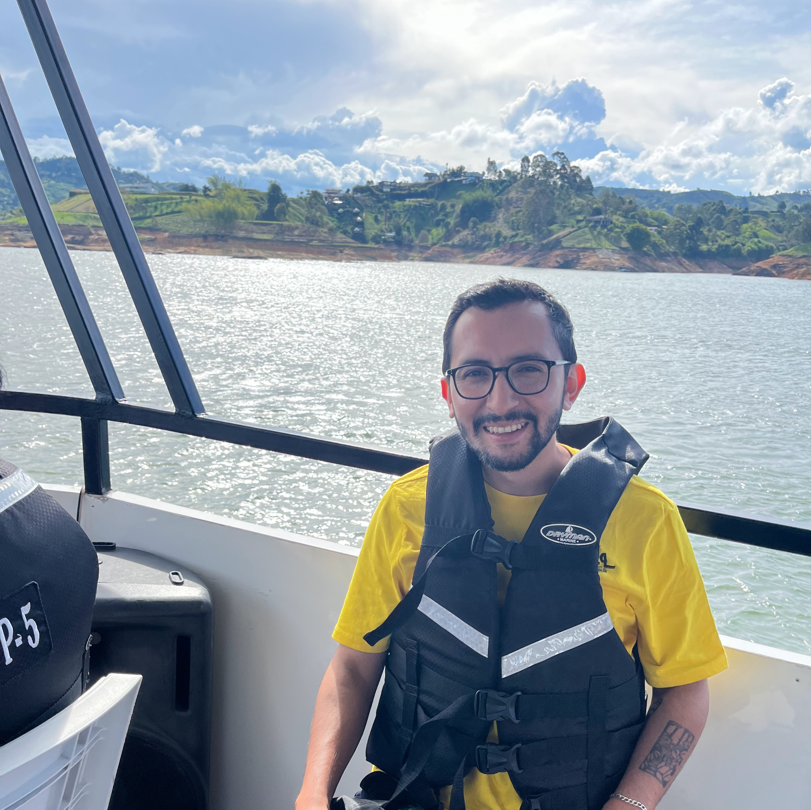

Electronic Engineer from Universidad Nacional de Colombia, with a specialization in Embedded Systems from Universidad de Buenos Aires.
I design and build low-power embedded systems using Zephyr RTOS, nRF52840, ESP32 and NXP microcontrollers, and develop full-stack applications with React, TypeScript and Node.js to support real world connected products.
Currently building AirNode, an open-source environmental IoT sensor.
Open to new opportunities and interesting projects. Feel free to reach out.

Stack: Zephyr RTOS, nRF52840, React Native, MQTT
Low-power environmental sensor that measures air quality in real time and streams data via Bluetooth and MQTT over WiFi. Designed as a complete end-to-end IoT project, from embedded firmware to a cross-platform cloud-connected app.
GitHubStack: FreeRTOS, ESP32-CAM, NXP, UART, MQTT, WiFI
Thesis project integrating an ESP32-CAM and NXP microcontroller to modernize intercom systems with image capture and remote door control.
Youtube DemoStack: FPGA, Cortex-A9, VHDL
Implementation of a Numerically Controlled Oscillator on an FPGA, controlled by a Cortex-A9 processor. Demonstrates integration between embedded software and digital logic for signal generation.
GitHubStack: STM32, BME280, UART, LCD
Reads temperature and humidity using a BME280 sensor and displays data via UART and LCD. Developed using STM32 HAL.
GitHubOct 2025 - Present
Part of the core improvements team, making enhancements across the platform.
Implementing new Whatsapp message types including carousel templates, handling backend, frontend, Meta API integration and webhook processing.